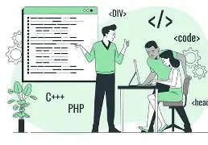
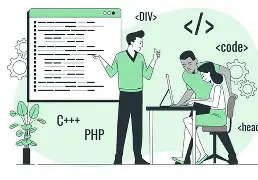
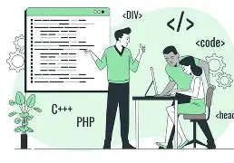

Full-Stack Web Development: I possess adeptness in architecting scalable web applications, leveraging my skills in modern frontend frameworks and robust backend systems. My expertise extends to responsive design, API integration, and database management, enabling me to develop seamless digital experiences for complex system requirements.
Cloud Infrastructure: With a passion for system reliability, I have honed my skills in cloud architecture, containerization, and automated deployment pipelines. I have hands-on experience in managing server environments, ranging from microservices orchestration to secure, high-availability cloud hosting solutions.
MY Portfolio
Take a look at the services which i can offer to your organization

Explore My
Experience
Information Technology
1.
Scalable Web Architecture: I possess adeptness in designing enterprise-level web systems, leveraging my skills in React, Node.js, and TypeScript. My expertise extends to state management and modular component design, enabling me to develop high-performance interfaces that scale with user demand.
2.
Cloud Native Deployment: With a passion for modern infrastructure, I have honed my skills in AWS and Google Cloud Platform. I have hands-on experience in serverless computing and resource orchestration, ranging from small-scale applications to global, multi-region cloud deployments.
3.
DevOps & CI/CD Pipelines: I possess adeptness in automating the software lifecycle through continuous integration and delivery pipelines. My expertise extends to GitHub Actions and Docker containerization, enabling me to decrease deployment times while maintaining high code quality and system stability.
4.
Database & Security Management: With a passion for data integrity, I have honed my skills in SQL/NoSQL database optimization and cloud security protocols. I have hands-on experience in data encryption and IAM policy configuration, ensuring that web systems remain secure against modern cyber threats.
Capstone Projects
Innovation & Documentary Videos
1. DeKUT Management System
Duration: 20 Mins | Topic: Tech Innovation
Digital transformation of industrial attachment logbooks into a web-based ecosystem.
2. Leadership & Gender
Topic: Culture & Social Cohesion
Exploring gender inclusivity and the role of elders in promoting community unity.
3. Youth Unemployment
Topic: Economic Solutions & Empowerment
A strategic look at root causes and collective actions to empower African youth.
View My Slide Decks
Presentations & Documents
Resource Center
Innovation System: View DeKUT Management System architecture.
Youth Unemployment: View strategies and job creation solutions.
Gender Awareness: View leadership and social cohesion.
Autobiography: View professional journey and milestones.

 
